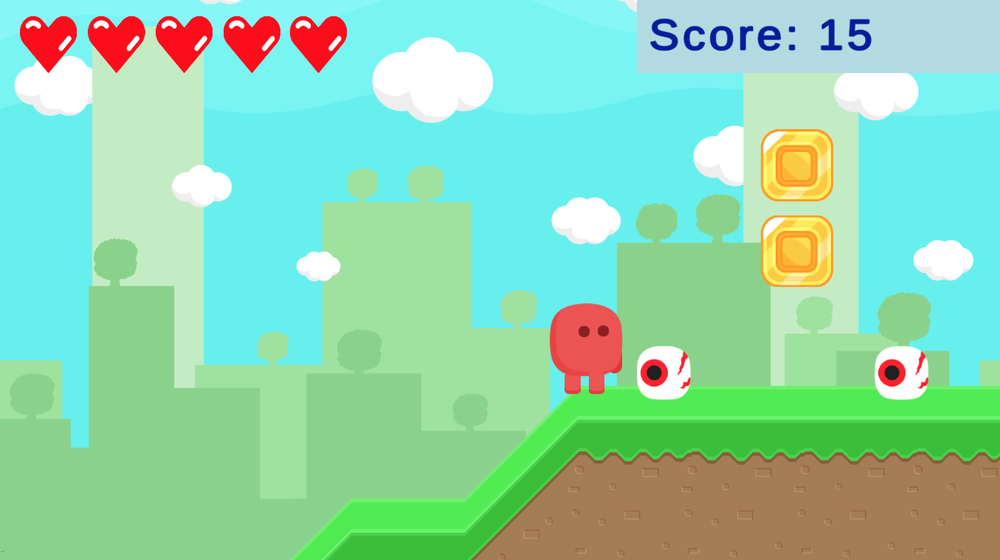

-
Death & Rebirth in Platformer Games
Research Questions:
- How is death and rebirth (respawning) structured and expressed in games?
- How do death and rebirth mechanics relate to player experience constructs, such as enjoyment and flow?
- How do player traits/orientation relate to the experience of failure (death and rebirth) in games?
Methods:
- 1. Observations
- 2. Coding: Open, Axial, and Selective
- 3. Constructivist Grounded Theory
PublicationsEdward F. Melcer and Marjorie Ann M. Cuerdo. (2020). “Death & Rebirth in Platformer Games”. In Game User Experience and Player-Centered Design. Springer.
Marjorie Ann Cuerdo and Edward Melcer. (2020). “’I’ll Be Back’: A Taxonomy of Death and Rebirth in Platformer Video Games”. In Extended Abstracts of the 2020 CHI Conference on Human Factors in Computing Systems. CHI '20, Honolulu, HI, USA. ACM.
Advised by Edward Melcer.
AbstractFailure is a central aspect of almost every game, driving player perceptions of difficulty and impacting core aspects of game user experience. At the heart of failure in many game genres is player death, and platformer games in particular rely heavily on the use of death within their design. This work addresses the rich, underexplored space of in-game death (and respawning) through the creation of a generalized taxonomy of death in platformer games. The taxonomy consists of five notable dimensions: (1) obstacles, (2) death conditions, (3) aesthetics, (4) changes to player progress, and (5) respawn locations. These different dimensions have a number of potential implications for key aspects of player experience and design (see below for common platformer game designs identified using this taxonomy). The taxonomy could also be used to help improve the effectiveness of related engagement techniques such as dynamic difficulty adjustment.

I'm extending the work by developing a platformer game (work-in-progress pictured above), in which I modify conditions for a death and rebirth mechanic and analyze effects on PX, also taking into account player traits/orientation.
-
Mad Mixologist
 Research Questions:
Research Questions:
- How does altering objects in an AR space affect collaboration (embodied facilitation)?
- How does swapping visual perspectives of teammates affect collaborative strategies?
AbstractMad Mixologist is an AR alternative controller game where players must work together to create the ultimate drink. The game employs collaborative play and perspective switching to encourage player reflection and understanding of another’s viewpoint during collaborative tasks. Both players in the game wear customized VR headsets that have been modified to allow for phone cameras to capture and broadcast video of the view from the front of the headsets. Rather than being able to look out of the headsets normally, each player is instead shown video of themselves from the other player’s camera/view (i.e., swapping perspectives). Not only are the players’ vision swapped, but they also have to pour, mix, and garnish drinks in the real world—resulting in a messy, challenging, entertaining, and wholly unique alternative controller spectacle.
-
Evolving Child-Computer Interaction: Mobile-based Interaction Design and User Testing
Main Research Question: Can usability testing be adapted towards children?
- 1. Moderated In-Lab Observations
- 2. Qualitative Analysis
PublicationsCynthia Putnam, Melisa Puthenmadom, Marjorie Ann Cuerdo, Wanshu Wang, and Nathan Paul. (2020). “Adaptation of the System Usability Scale for User Testing with Children”. In Extended Abstracts of the 2020 CHI Conference on Human Factors in Computing Systems. CHI '20, Honolulu, HI, USA. ACM.
Advised by Cynthia Putnam.
AbstractWhile it is highly likely that children under the age of 12 have used a mobile device in the U.S., there is a paucity of information to guide interaction designers and usability experts about how to design and test their mobile apps with children. In this work (currently a pilot study), I have conducted user testing of mobile-based apps aimed at computational thinking with two different age groups (7-8 and 9-11). The pilot study will lay a foundation for an envisioned larger project that will result in developmental-focused interaction design guidelines for mobile apps; future work will include creating and testing the efficacy of a tool for designers to access the guideline libraries. This study also contributes to the knowledgebase of user testing with children; specifically, we are working to modify and adapt the System Usablity Scale (SUS) for these two groups.
As an RA, I moderated in-lab studies with child participants and their parents, as well as participated in qualitative analysis and writing.